WASHI WATCH
Industrial Design, Material Exploration
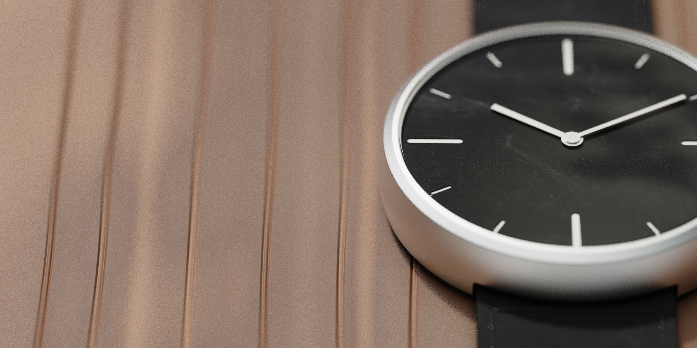
Washi is a traditional Japanese paper that is handmade and known for it's warmth and textural qualities.
Exploring Japan
This project, which was part of my student exchange with Tama Art University, was simply to design something inspired by my time in Japan. With this being my first experience with Japanese culture outside of the United States, I started my research by exploring the city and soaking in all the details. Even though Tokyo seems like a major urban area, you can still notice their nature and traditions throughout the city.
TRADITION of WASHI
I found myself most being fascinated by the traditional crafts of Japan, and Washi ended up being the craft that caught my eye. It is primarily handmade and has many applications such as art, stationary, clothing, lighting, umbrellas, and much more. The wide applications of Washi reminded me of leather, so I thought of leather adjacent applications.
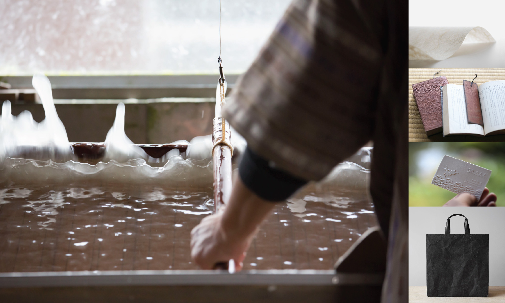
Opportunity
With Washi being similar to leather, I expected to find a multitude of watches utilizing Washi but I found none. Washi is soft to the touch and gives you a feeling of warmth, which I thought would be perfect qualities to see in a watchband.
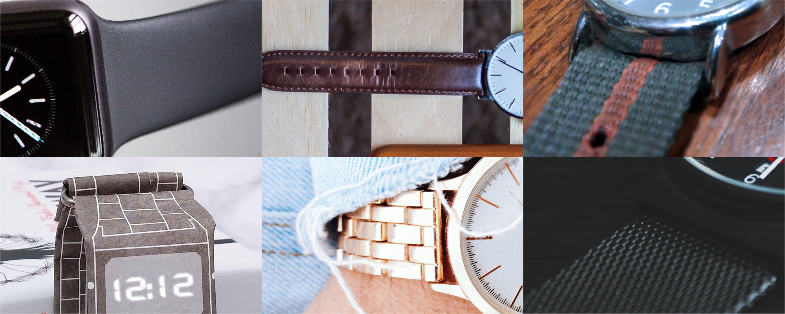
Material Limitations
Due to the process of making Washi, it is much stronger than other paper, however, it is still paper, so it cannot handle the daily wear and tear of a traditional watch band. With strength and durability being an issue, I learned the ins and outs of the process to make washi, in order to potentially modify it for this specific use case.
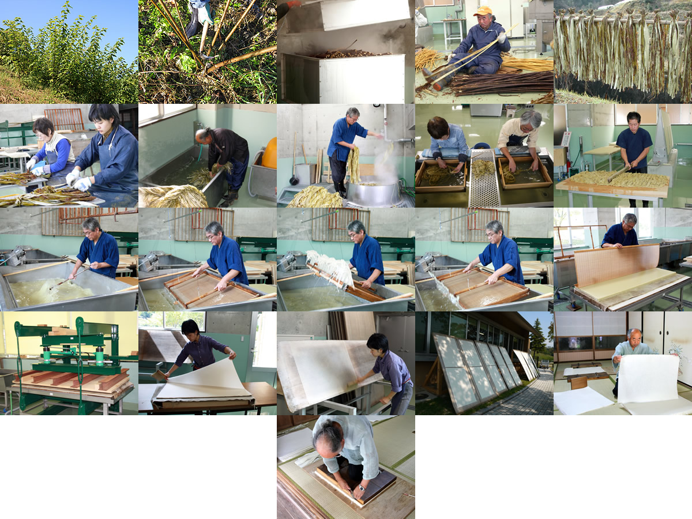
Material Discovery
It would have been amazing to have created a special blend of washi, but I discovered that my ideal blend already existed. I found this washi in the brand SIWA. The brand's products are made with a special blend of wood fiber and plastic called Naoron. By using the plastic to bind the wood fibers, Naoron acheived my desired material properties suitable for a watchband.
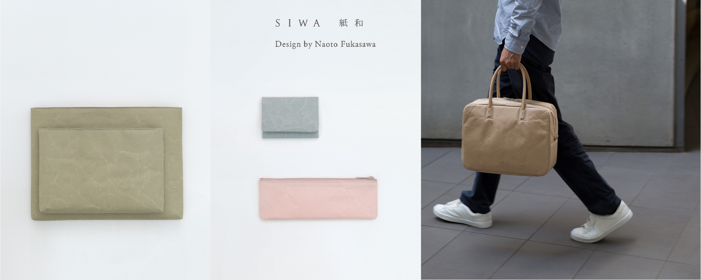 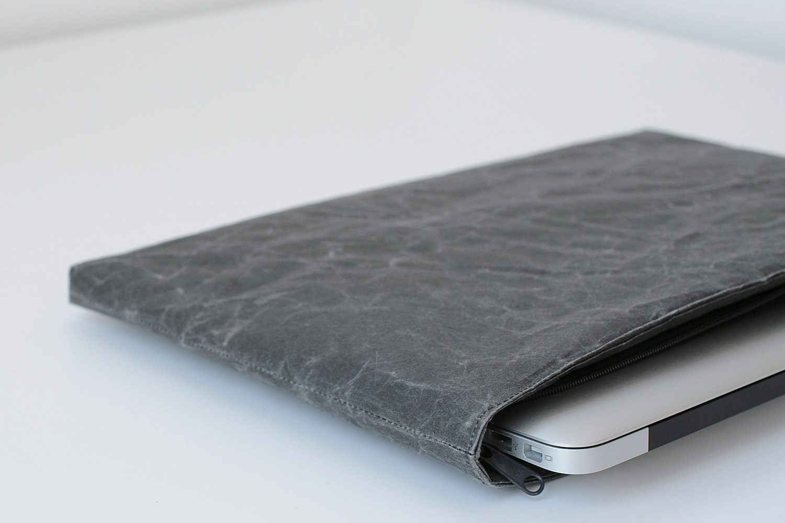
Case Body
With the focus of this watch being the material, I went from exploring a multitude of body designs to a move simplified version where the band could flow straight into the body.
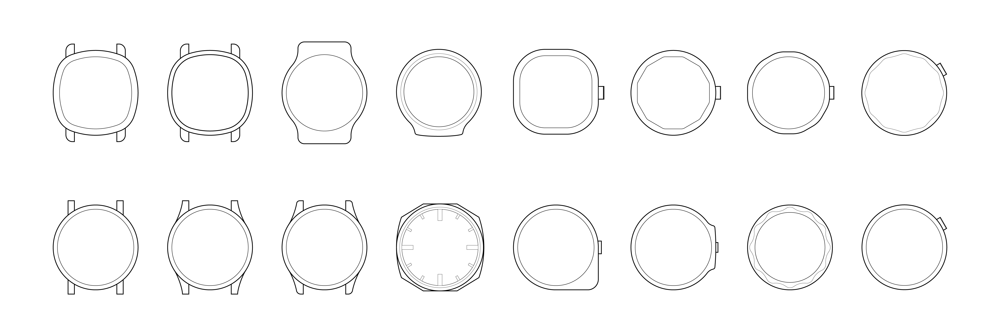
Watch Face
I considered several materials for the case body and how the case material would affect the watch face material.
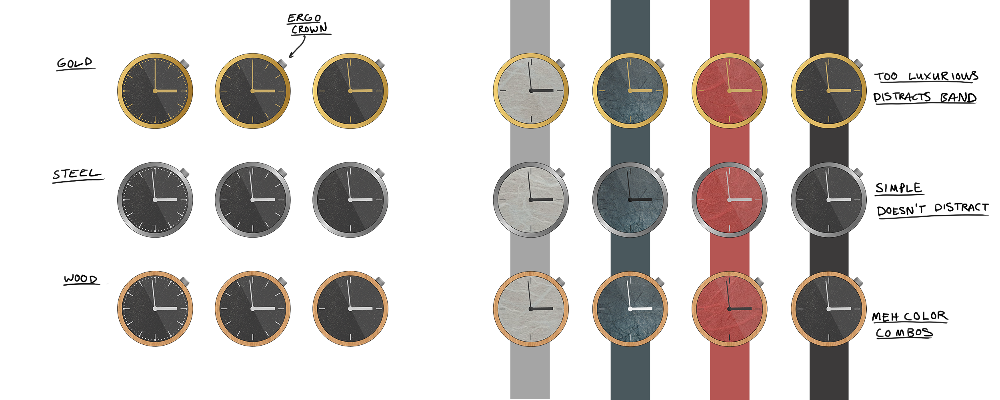
Final Round
Faces were chosen to optimize the readability of the face white and maximize the area of the washi dial.
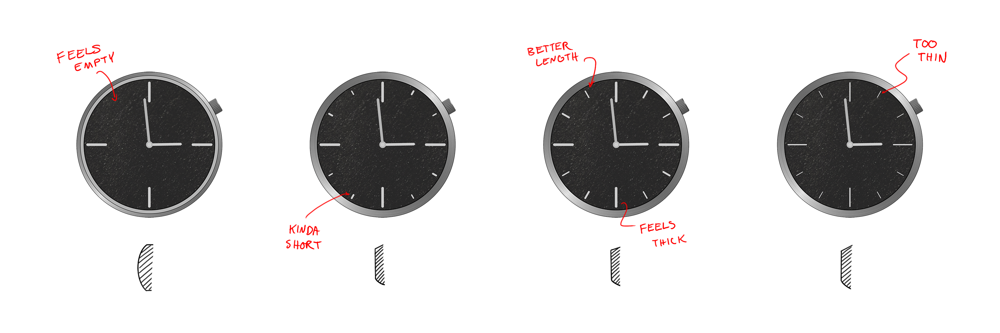Prototyping
I used prototyping to visually work out some aspects of the design. Laser cutting, 3d printing, hand sewing in my tiny apartment, destroying a nice ipad case, sourcing watch components. I was focusing on actually making the watch with very common parts to make this make this at an affordable price range.
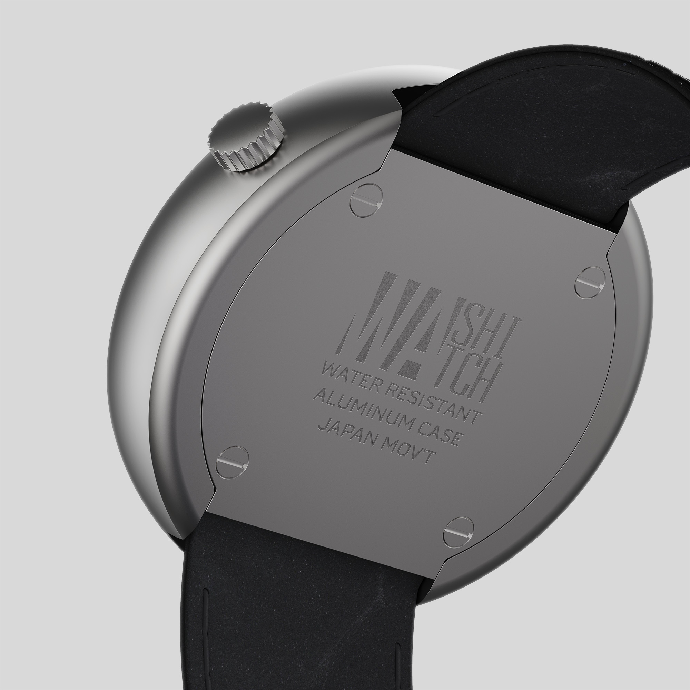 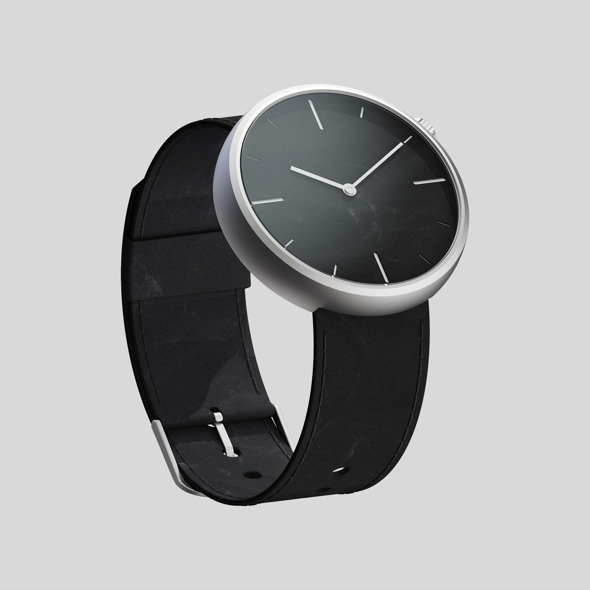
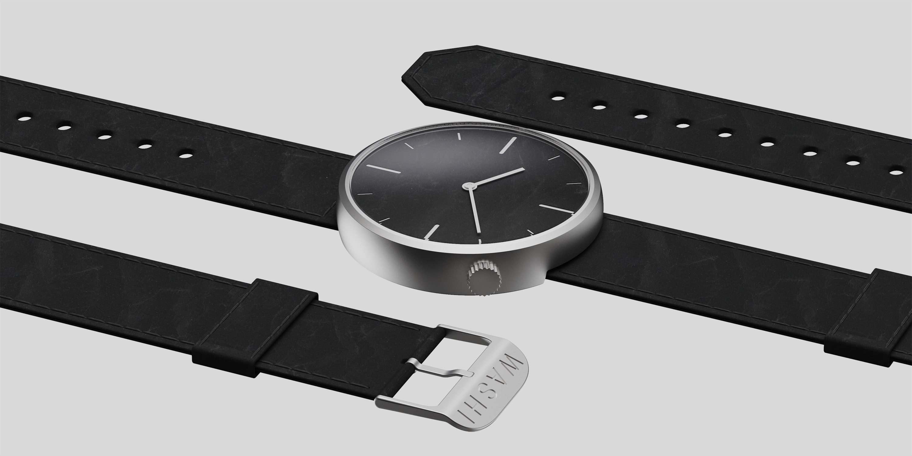
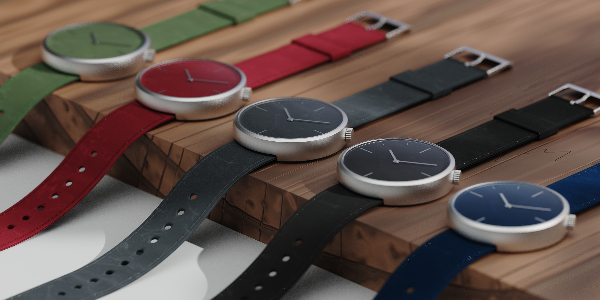
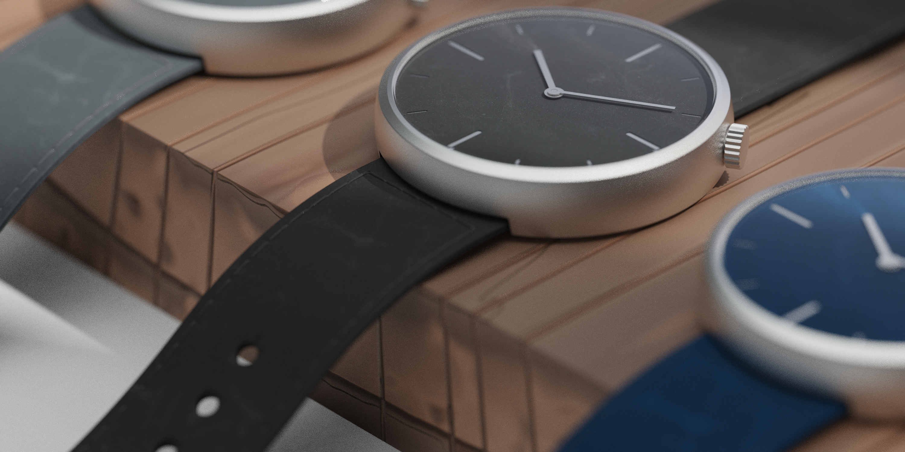
WIP
I'm working on making a few of these watches with the remaining Naoron.
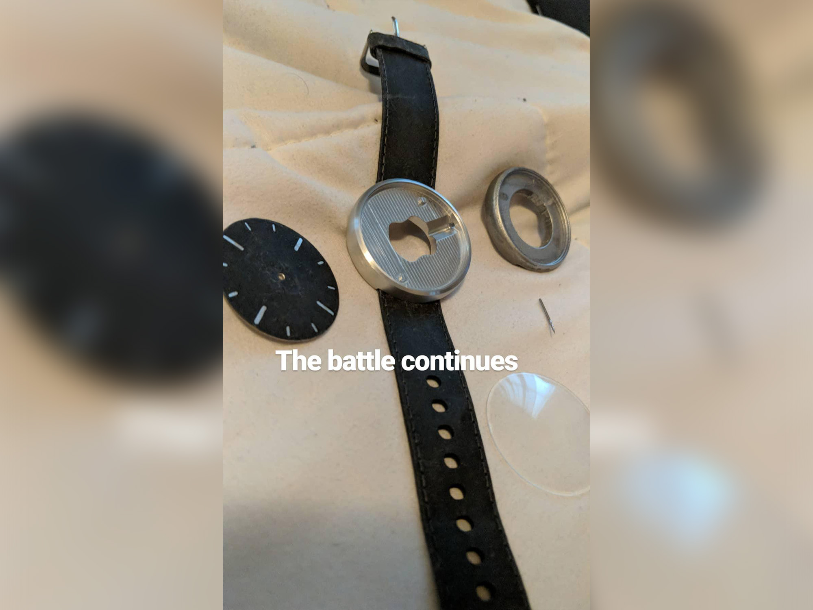 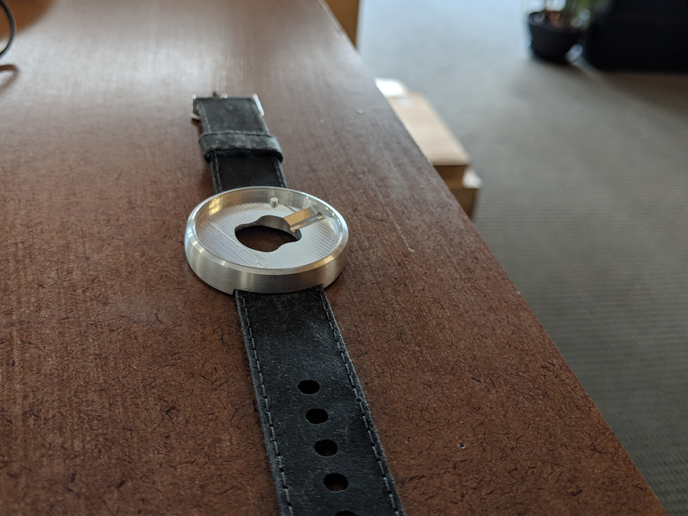 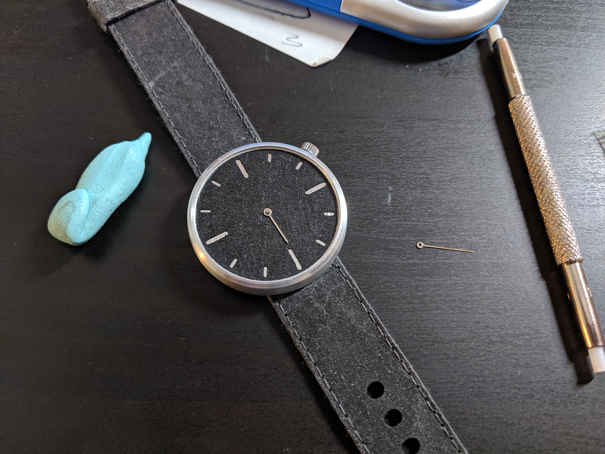